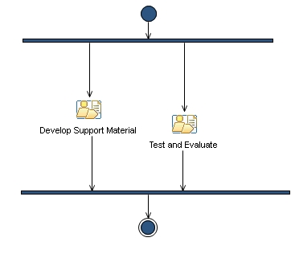

Capability Pattern: Develop Support Material [within Scope]
This covers activities required to develop supporting material, such as tutorials, product documentation, samples, within the scope identified in the iteration plan.
Description
Work Breakdown Structure
Team Allocation
Work Product Usage
Workflow

Work Breakdown
Licensed Materials - Property of IBM
© Copyright IBM Corp. 1987, 2011. All Rights Reserved.